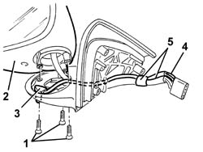

5010D12 outside air temperature sensor on door mirror - r+r following electrical circuit check
- Path
- Procedures > 50 AUXILIARY UNITS > 5010 CLIMATE CONTROL - MISCELLANEOUS > 5010D air temperature recording system > 5010D12 outside air temperature sensor on door mirror - r+r following electrical circuit check
- Kind
- repair procedure (removal / refitting; the operation number is the code)
- Applies to
- all engines; all production periods
- Interactive page
- https://sloeber94.github.io/elrnDB-a147/en/#/3025399
Applies to: all engines; all production periods
 Removing
Removing
 Refitting
Refitting7005R30 electrically controlled door mirror (one) - r+r (left).
1. Undo the lower bolts.
2. Move the rear view mirror assembly slightly.
3. Remove the outside air temperature sensor from its housing.
4. Disconnect the electrical connections for the sensor from the connector.
5. Cut the retaining band and remove the wiring and sensor.

Applies to: all engines; all production periods
Refitting
RemovingCheck that the sensor is not damaged.
Place the sensor and wiring in position.
Connect the electrical connections for the sensor to the connector.
Secure the wiring using the band.
Position the rear view mirror assembly and secure it using the bolts.
7005R30 electrically controlled door mirror (one) - r+r (left).
Check the operation of the system using the Examiner or the other diagnostic equipment.